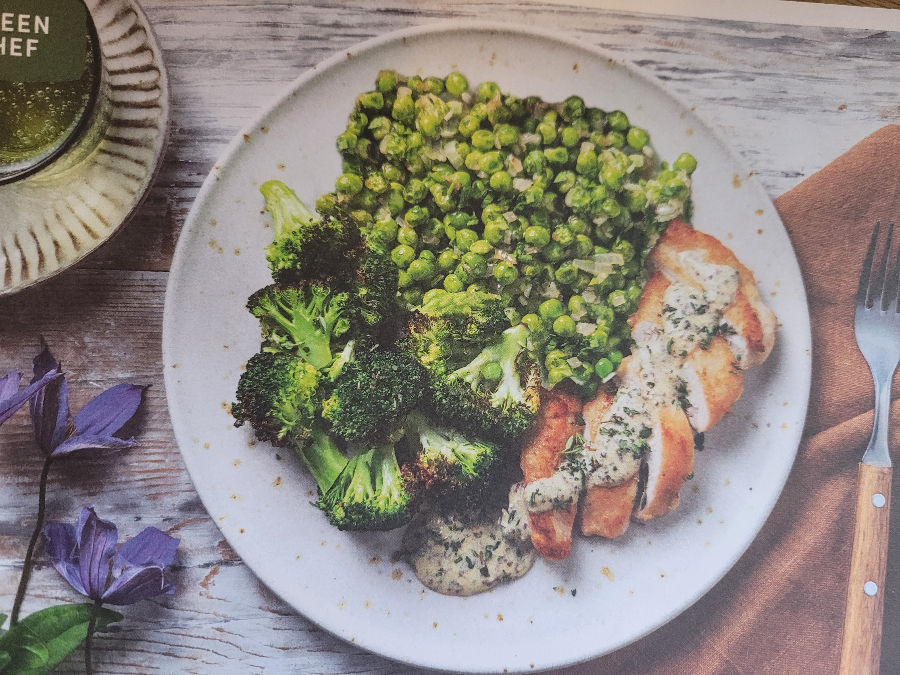

Chicken Thighs in Mustard and Thyme Sauce

Description
Chicken Thighs in Mustard and Thyme Sauce with roasted broccoli and buttery peas. This recipe is keto-friendly.
Ingredients
- broccoli
- shallot
- thyme
- chicken thighs
- peas
- creme fraiche
- chicken stock paste
- wholegrain mustard
- butter
- oil for cooking
Steps
- Preheat oven to 220C. Cut broccoli into florets. Halve, peel and thinly slice the shallot. Pick thyme from stalk and roughly chop.
- Heat frying pan on medium-high with drizzle of oil. Once hot, lay chicken thighs in pan. cook for 5 mins on each side.
- Transfer chicken to baking tray. Drizzle with oil and season with salt and pepper.
- Put broccoli on baking tray. Drizzle with oil and season with salt and pepper, turn to coat. spread out in single layer.
- Roast chicken and broccoli in middle of oven, 10-15 mins.
- Return frying pan to medium-high heat. When hot, add the shallot and fry until starting to soften, 1-2 mins.
- Add peas to frying pan and cook until tender, 2-3 mins. Then add butter and season with salt and pepper. Remove from heat and cover to keep warm.
- Place small saucepan on medium-high heat (no oil). When hot, add the creme fraiche, mustard and half of the thyme. Reduce to medium heat, stir to combine, simmer until thickened, 2-3 mins. Season with salt and pepper.
- Slice chicken and fan out on plates. Pour sauce over the chicken. Serve with the broccoli and peas. Scatter remaining thyme to finish.
- Enjoy!